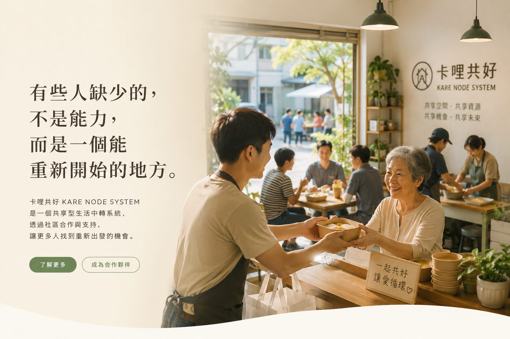

卡哩共好是一套共享型生活中轉系統。
透過餐點、共享空間、合作據點與社區循環，
建立重新開始的機會。

很多人不是沒有能力， 而是缺少一個安全且低壓力的重新開始機會。
許多空間、設備與時段沒有被有效利用， 同時也有人缺少機會。
從困境回到穩定生活之間， 往往缺少一個可以過渡的地方。
我們希望串聯人、空間、資源與機會， 建立一套可循環、可持續、可複製的支持系統。
餐盒只是入口， 真正流動的是重新連結。
真正重要的，
不是平台有多大。
而是有多少人，
重新開始了人生。
無論你是社區居民、店家、社福單位或企業夥伴， 都可能成為支持循環的一部分。